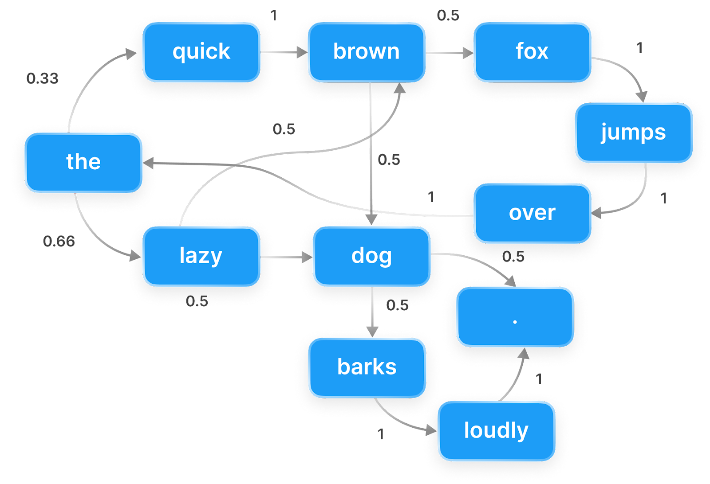

Markov language models
A Markov language model is a simple probabilistic model that describes how likely one token is to follow another.
It is based on the principle of memorylessness: the probability of the next token depends only on the current token, not on the entire history of previous tokens.
In practice, a token can be a word, part of a word (e.g., byte-pair tokenisation), or even punctuation, depending on the tokenisation method used.
For now, you can think of tokens simply as words (ignoring punctuation and case), together with special tokens marking the start ($\langle s\rangle$) and end ($\langle /s\rangle$) of a sentence.
Notation
Let us first introduce some basic notation.
Consider two events, $A$ and $B$.
Denote the probability that $A$ occurs by $P(A)$, and the probability that $A$ occurs given that $B$ has occurred by $P(A \mid B)$.
We denote the token at position $i$ in a sequence by $w_i$.
The expression $P(w_i \mid w_{i-1})$ is interpreted as "the probability that the next token takes the value $w_i$, given that the previous token took the value $w_{i-1}$".
Markov property
Formally, the Markov property states that $P(w_{i} \mid w_{i-1}, w_{i-2}, \ldots, w_1) = P(w_i \mid w_{i-1})$. In words: the probability of observing token $w_i$ depends only on the immediately preceding token $w_{i-1}$, and not on any earlier tokens in the sequence.
This is a strong assumption, and it is not strictly true for natural language, where the choice of a word often depends on long-range context. Consider our earlier example: "the quick brown fox jumps over the lazy ___". Ideally, we would like to evaluate $$P(\text{dog} \mid\langle s\rangle \text{ the quick brown fox jumps over the lazy})$$ with high probability. Under the Markov assumption, however, this is instead approximated by $$P(\text{dog} \mid \text{lazy}).$$ The model is forced to ignore almost the entire sentence and rely only on the word "lazy". As a result, it may assign only modest probability to "dog", since words such as "afternoon", "river", or "bones" might appear more frequently after "lazy" in general text.
Although this simplification limits accuracy, Markov models can still capture useful local patterns in language and serve as a foundation for understanding more complex models.
The below image illustrates a Markov chain. Each node represents a token, and the edges represent the probabilities of transitioning from one token to the next. Starting from "the", we could feasibly generate the sentence "the quick brown dog jumps over the lazy dog.", among many others.

For larger texts, the transition probabilities in a Markov language model are better visualised using a bigram table.
Bigram table
A bigram table displays the probability that one token follows another in a given corpus. These probabilities are estimated by counting how often each token follows a given previous token, and then normalising those counts so that they sum to one.
Let $\text{C}(w_{i-1}, w_i)$ denote the number of times token $w_i$ appears immediately after token $w_{i-1}$ in the corpus.
The bigram probability is then estimated by
$$P(w_i \mid w_{i-1}) = \frac{\text{C}(w_{i-1}, w_i)}{\sum_{w'\in V} \text{C}(w_{i-1}, w')},$$
where $V$ denotes the vocabulary (the set of unique tokens in the corpus).
The denominator represents the total number of times the token $w_{i-1}$ is followed by any token.
Since every occurrence of $w_{i-1}$ must be followed by some token
(including the special end-of-sentence token, $\langle /s\rangle$),
this quantity is simply the total count of $w_{i-1}$ in the corpus,
often written $\mathrm{C}(w_{i-1})$.
Dividing by this total converts raw counts into a valid probability distribution over all possible next tokens. This method of parameter estimation is called maximum likelihood estimation: the resulting probabilities are exactly those that maximise the likelihood of the observed corpus under the bigram (Markov) assumption.
Using our previous example, we would therefore intuitively estimate $$P(\text{dog} \mid \text{lazy}) = \frac{\text{C}(\text{lazy}, \text{dog})}{\text{C}(\text{lazy})}.$$
Create your own bigram table
Below, you can build a bigram table from a corpus of your choice and explore the most common token pairs. You may also provide your own text. It may be useful to start small (e.g., a few sentences) to understand how the bigram table works before experimenting with larger texts. You can find large collections of copyright-free text on Project Gutenberg. Choose a book, open the plain text version, copy and paste it (or sections of it) into the box below and examine its most frequent bigrams. Warning: larger works may take a few seconds to process.
Bigrams as a generative model
This demo generates text by randomly sampling the next token using the bigram probabilities \(P(w_i \mid w_{i-1})\). Because it only looks one token back, the output can be locally plausible but globally incoherent.
Discussion
By training the Markov language model on different authors, we can generate text that mimics their style, albeit with limited coherence. Indeed, an author's bigram can be thought of as a stylistic fingerprint that captures both their word frequencies and pairings. This demo highlights the importance of choosing the training corpus carefully, as it directly shapes the model's output. It would not be appropriate to train a model intended for general English text on a corpus of Shakespeare's works, as it would learn archaic language that is not representative of modern English.
How do the generated sentences compare to autocomplete suggestions in your messaging app? Do they feel more or less coherent than the output of the Markov model?
We emphasise the importance of thorough data cleaning before building the bigram table. In this demo, we apply only basic preprocessing, such as lowercasing the text and removing punctuation. As a result, artefacts still appear, including numbers, stage directions (in Shakespeare) and Project Gutenberg header and footer metadata. For example, select the French book "Les Dieux de la tribu" and use the prompt "This". Clearly, the model has learned English bigrams from the metadata, which is not ideal if we want to generate French text. Nonetheless, the language transitions back to French after a full stop token or tokens common to both the English and French language, e.g., "a" or "on". Similar behaviour can be observed in the works of Shakespeare, where a small amount of French is present (try the prompt "fois").
A clear limitation of this model is that the bigram table is often sparse, meaning that many plausible token pairs may not appear in the training corpus at all. For example, Shakespeare uses the tokens "the" and "rabbit" separately, but never the bigram "the rabbit", so it is impossible to generate that phrase when trained only on Shakespeare's works, despite it being perfectly reasonable English and appearing frequently in other texts, such as Alice's Adventures in Wonderland. This problem is known as the sparsity problem and is a major issue for Markov models, especially when the vocabulary is large. Another problem is that the Markov chain may get "stuck" in loops, repeatedly generating the same subset of tokens (see reducible Markov chains).
Each of these problems can be mitigated using smoothing techniques, which adjust the estimated probabilities to account for unseen events. The simplest smoothing method is add-one (Laplace) smoothing, which adds one to all bigram counts before normalisation, ensuring that no bigram has zero probability. The formula for add-one smoothing is: $$P(w_i \mid w_{i-1}) = \frac{\text{C}(w_{i-1}, w_i) + 1}{\text{C}(w_{i-1}) + |V|},$$ where $|V|$ is the size of the vocabulary. More sophisticated methods, such as Kneser-Ney smoothing, are commonly used in practice and can significantly improve the performance of Markov models.
Next demonstration
In the next demonstration, we will generalise the Markov model to the broader class of N-gram models.